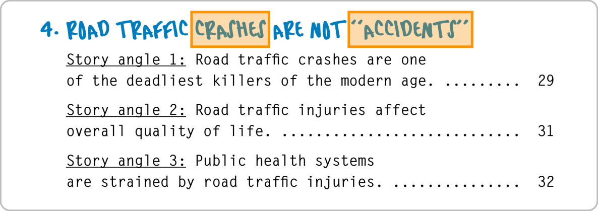

| Mehmet M. Kunt, PhD | Hüseyin Sevay, PhD | Taner Aksu, PE, MSc, MA |
| DAÜ İnşaat Mühendisliği Öğretim Üyesi, DAÜ Trafik Eğitimi ve Araştırma Merkezi Başkanı | YDÜ Bilişim Sistemleri Mühendisliği Öğretim Üyesi, trafik güvenliği araştırmacısı | Profesyonel lisanslı trafik ve ulaştırma mühendisi, Kaliforniya, ABD |
Özet
KKTC’nin trafik güvenliği krizi
Komitenin oluşumu
Komitenin yapısı, çalışma biçimi
Komitenin vizyonu
Komitenin amaçları
Basının rolü
Sonuç
Trafik güvenliğini düşündüğümüzde ne anlıyoruz?
Trafik güvenliğini düşündüğümüzde ne anlıyoruz?

Bazı tanımlar (1/2)
“Trafik” nedir?
- İnsanların ve ihtiyaç maddelerinin bir yerden başka bir yere güvenli ve verimli şekilde ulaşımını sağlayan sistem
“Trafik güvenliği” nedir?
- Yol kullananların trafikte ölmemesi ve ciddi şekilde yaralanmaması için kullanılan metodlar ve alınan önlemler bütünü
Bazı tanımlar (2/2)
“Trafik mühendisliği” nedir?
- Yol kullananların güvenli, verimli, ve akıcı bir şekilde seyahat etmesini sağlayan mühendislik alanı
Trafikte Öncelikler
KKTC’nin Trafik Güvenliği Krizi
Topluma hizmet veren bir trafik güvenliği sisteminin olmamasından kaynaklanan çok sayıda ölüm ve ciddi yaralanma (MAIS3+)/kalıcı sakatlık
- Maddi, fiziksel, ve ruhsal kayıplar
Yıllardan beridir gereken çözümleri üretecek bir trafik güvenliği sisteminin olmamasından doğan eksiklikler
Trafik Güvenliği Komitesi (TGK)
4 Mayıs 2017: “Trafik güvenliği” gündemi ile ilk kez olağanüstü statüde gerçekleştirilen KKTC Cumhuriyet Meclisi birleşimi
TGK’nin oybirliği ile kurulması
Uzman takımın görevlendirilmesi
Şeffaflık, hesap verebilirlik
Takım ruhu ile çalışmak
Vizyon
KKTC’de topluma hizmet verecek—trafikte hayat kurtaracak ve ciddi yaralanmaları önleyecek—bir Trafik Güvenliği Sistemi oluşturulmasını sağlamak
TGK Yapısı
Toplam 7 milletvekili
Alt çalışma grubu
Görev alan 7 milletvekili arasından seçilen 4 milletvekili
3 kişilik uzman takımı
Milletvekillerin görevleri (1/2)
Uzman takıma türlü hususta destek ve yardımcı olmak
Trafik güvenliği ile ilgili kurum, kuruluş, ve örgütler ile yapılacak istişarelere katkı koymak
Uzman takımın ilgili birimlerin yardımlarıyla hazırlayacağı raporları değerlendirmek
Milletvekillerin görevleri (2/2)
Amaca hizmet edecek bir trafik güvenliği sisteminin yürütme organları tarafından uygulamaya konulması için köprü görevi görmek
Amaca yönelik yasa çalışmaları yapmak
Uzman takımla birlikte KKTC’de topluma hizmet edecek bir trafik güvenliği sistemi tesis edilene kadar görevde kalmak
Uzman Takımı
Profesyonel lisanslı trafik ve ulaştırma mühendisi, trafik ve ulaştırma mühendisliği alanlarında donanımlı, deneyimli, ve araştırmacı mühendis akademisyenler
Uluslararası trafik ve ulaştırma mühendisliği projeleri deneyimli
Gönüllü
Uzmanların görevleri
KKTC’nin var olan trafik sisteminin bilimsel durum tespitini yapmak
- Trafik Güvenliği ile ilgili kurum, kuruluş, ve örgütler ile istişarelerde bulunmak
Dünyada “7E” sistemi olarak bilinen ve uygulanan faktörlere dayalı bir Trafik Güvenliği Sistemi oluşturulması için nelerin yapılması gerektiğini belirlemek
Gereken başka alanlardaki uzmanlarla çalışmak
7E Trafik Güvenliği Sistemi
| TR | EN | |
|---|---|---|
| 1. | Denetim | (“Enforcement”) |
| 2. | Mühendislik | (“Engineering”) |
| 3. | Eğitim | (“Education”) |
| 4. | Acil Hizmetler | (“Emergency response services”) |
| 5. | Açığa çıkarma | (“Exposure”) |
| 6. | Değerlendirme | (“Evaluation”) |
| 7. | Teşvik | (“Encouragement”) |
Temel etik prensip
Trafikte tek bir insanın hayatını kaybetmesi veya ciddi şekilde yaralanması kabul edilemez.
- “Vizyon Sıfır,” İsveç Parlamentosu, 1997
Trafikte ölüm ve ciddi yaralanma önlenebilirdir.
“Güvenli Sistem Yaklaşımı”

1. Denetim
Polis trafik denetimleri
Ehliyet sistemi
Araç sigorta sistemi
Araç muayene sistemi
Trafik güvenliği projelerinin yapısal denetimleri
- Belirlenecek standartlar
Hukuk sistemi
. . .
2. Mühendislik
Trafik mühendisliği
- Ülkemizde trafik güvenliği sisteminin oluşturulması ve amaca hizmet edecek şekilde sürdürülebilirliğinin sağlanması için kritik bir uzmanlık
Trafik güvenliği ile ilgili gerektiğince başvurulacak diğer mühendislik dalları
- İnşaat, elektrik, çevre, makine, vb
3. Eğitim
Aile, kreş eğitimi
- Tüm okullardaki örgün trafik güvenliği eğitimi
- anasınıf ➝ lise son sınıf (+ üniversite)
- sürekli, interaktif, yaşa/yaşam şartlarına uygun
Sürücü eğitimi
Toplumun trafik güvenliği farkındalık eğitimi
İlgili mesleklerdeki kişilerin trafik güvenliği farkındalık eğitimi
4. Acil hizmetler
112 Acil Servis
İtfaiye
Bütün bir sistemin parçası olarak hayat kurtarmayı ön planda tutacak şekilde acil hizmetlerin diğer çözüm unsurları ile uyum içerisinde çalışması
5. Açığa çıkarma
- Trafik güvenliği için gereken verilerin çeşitli faktörleri ilişkilendirerek ilgili birimlerle birlikte detaylı şekilde incelenerek eksikliklerin belirlenmesi
6. Değerlendirme
Problem tanımı yapılması, çözüm alterniflerinin üretilmesi, en iyi çözümün tayin edilmesi, seçilen çözümün projelendirilmesi, projenin uygulanırken kontrolünün yapılması, ve uygulamanın başarısının ölçülmesi
Öncesi ve sonrası çalışmaları (“before and after studies”)
7. Teşvik
Toplum ve profesyoneller düzeyinde doğru davranışların teşvik edilmesi
Trafik güvenliğine yönelik özel eğitim ve gelişim programları düzenlenmesi
Trafik Güvenliği Sisteminin başarılı olması için …
|
W. Edwards Deming’in “Krizden Çıkış” kitabında bahsettiği 14 kuralı uygulamayı önereceğiz. |
Trafik Güvenliği Sisteminin başarılı olması için …
“W. Edwards Deming’in 14 maddesi Amerikan endüstrisinin dönüşümünün temelini oluşturmuştur.”
- W. Edwards Deming, “Krizden Çıkış,” Arçelik Yayınları, 1998, sayfa 19-20
Trafik Güvenliği Sisteminin başarılı olması için …
Bu maddelere bakarken “Şirket” veya “Fabrika” kelimelerinin yerine aşağıdaki kurum isimlerinden herhangi birini yerleştirebiliriz:
Karayolları Dairesi
Trafik Dairesi
Bayındırlık ve Ulaştırma Bakanlığı
Polis Genel Müdürlüğü-Trafik Bölümü
. . .
Trafik Güvenliği Sisteminin başarılı olması için …
(W. Edwards Deming, Krizden Çıkış, Arçelik Yayınları, 1998, sayfa 19-20)’den bir bu maddelerin uygulanabilirliği konusunda bir bilgi notu:
- “Bu 14 madde her yer için geçerlidir. Küçük organizasyonlardan büyüklerine, hizmet endüstrisinden üretim sektörüne. Bir şirketin alt bölümleri için de geçerlidir.”
Trafik Güvenliği Sisteminin başarılı olması için …
W. Edwards Deming’in 14 maddesi (1–2):
“Ürünü ve hizmeti geliştirmeye yönelik bir amaç uyumu yaratın, hedefiniz rekabet edebilir hale gelmek, iş yapmak ve yeni işler yaratmak olsun.”
“Yeni felsefeyi benimseyin. Yeni bir ekonomik çağdayız. Batılı yönetimler bunu görmeli, sorumluluklarını öğrenmeli ve bu defa liderliğe soyunmalıdır.”
Trafik Güvenliği Sisteminin başarılı olması için …
W. Edwards Deming’in 14 maddesi (3–4):
“Kaliteye ulaşmak için kontrole güvenmekten vazgeçin. En başta kaliteyi ürünün bir parçası haline getirerek kontrol ihtiyacını toptan yok edin.”
“İşi etiket fiyatı bazında ödüllendirmekten vazgeçin. Bunun yerine, toplam maliyeti düşürün. Her kalem malzeme için tek bir tedarikçiyle çalışın, uzun süreli, bağlılık ve güvene dayalı bir ilişki kurun.”
Trafik Güvenliği Sisteminin başarılı olması için …
W. Edwards Deming’in 14 maddesi (5–6):
“Kalite ve üretkenliği artırmak ve dolayısıyla sürekli olarak maliyetleri düşürmek için, üretim ve hizmet sistemini sürekli geliştirin,”
“İş başında eğitimi kurumsallaştırın.”
Trafik Güvenliği Sisteminin başarılı olması için …
W. Edwards Deming’in 14 maddesi (7–8):
“Liderliği kurumsallaştırın (bkz. Madde 12). Gözetimin amacı, insanlara, makinelere ve aletlere, daha iyi iş çıkartabilmeleri için yardımcı olmaktır. Yönetimin ve işçilerin gözetimi konusunu gözden geçirmek gerekmektedir.”
“Korkuyu yok edin ki herkes şirket için etkin bir şekilde çalışsın.”
Trafik Güvenliği Sisteminin başarılı olması için …
W. Edwards Deming’in 14 maddesi (9):
- “Departmanlar arasındaki engelleri ortadan kaldırın. Araştırma, tasarım, satış ve üretimdeki insanlar bir takım olarak çalışmalıdır. Ancak bu şekilde ürün ve hizmette sonradan ortaya çıkabilecek üretim ve kullanım sorunlarını önleyebilirler.”
Trafik Güvenliği Sisteminin başarılı olması için …
W. Edwards Deming’in 14 maddesi (10):
- “Çalışanları sıfır kusur ve yeni üretkenlik düzeyleri için yönlendirmeye çalışan sloganlardan, öğütlerden, hedeflerden kurtulun. Bu tür öğütler yalnızca düşmanca ilişkiler yaratır, çünkü düşük kalite ve üretkenliğin başlıca nedenleri sisteme aittir ve dolayısıyla çalışanların yapabileceği bir şey yoktur.”
Trafik Güvenliği Sisteminin başarılı olması için …
W. Edwards Deming’in 14 maddesi (11a):
- “Fabrikada iş standartlarını (kotaları) ortadan kaldırın. Yerine liderliği koyun.”
Trafik Güvenliği Sisteminin başarılı olması için …
W. Edwards Deming’in 14 maddesi (11b):
- “Hedeflerle yönetimi ortadan kaldırın. Sayılarla, sayısal hedeflerle yönetimi ortadan kaldırın. Yerine liderliği koyun.”
Trafik Güvenliği Sisteminin başarılı olması için …
W. Edwards Deming’in 14 maddesi (12a):
- “Saat hesabıyla çalışan işçinin yaptığı işten gurur duymasını engelleyen engelleri kaldırın. Gözetmenlerin sorumluluğu salt sayılar değil, kalite olmalıdır.”
Trafik Güvenliği Sisteminin başarılı olması için …
W. Edwards Deming’in 14 maddesi (12b):
- “Yönetim ve mühendislikteki insanların, yaptıkları işten gurur duymalarını engelleyen engelleri ortadan kaldırın. Bu, başka şeylerin yanı sıra, yıllık ya da başarıya göre değerlendirmeyi ve hedeflerle yönetimi ortadan kaldırmayı gerektirir.”
Trafik Güvenliği Sisteminin başarılı olması için …
W. Edwards Deming’in 14 maddesi (13–14):
“Sıkı bir eğitim ve kendini geliştirme programı başlatın.”
“Şirketteki herkesin, bu dönüşümün gerçekleşmesi için çalışmasını sağlayın. Bu dönüşüm herkesin işidir.”
Basının Rolü
TGK’nin çabaları ile halk arasında köprü olmak
Gelişmeleri yakından takip etmek, sorgulamak
Verimli bir trafik güvenliği tartışmasının yaratılmasına katkı koymak
Trafik Güvenliği Sisteminin uygulanması konusunda toplum için yapılacak yazılı, işitsel, ve görsel bilinçlendirmeye katkı koymak
DSÖ Kılavuzu (1/3)

DSÖ Kılavuzu (2/3)

“Trafikte meydana gelen ‘çarpışmalar’ ‘kaza’ değildir”
DSÖ Kılavuzu (3/3)
NHTSA, 1997
{kind=link}
Sonuç (1/2)
KKTC tarihinde ilk kez trafik güvenliği için bilimsel bir durum tespit çalışması başlatılmıştır.
Çalışmanın tamamlanması için belirli bir süreç gereklidir.
Gerçek bir trafik güvenliği sistemine kavuşmamız mümkündür.
Hepimizin DEĞİŞİM inancı ile çalşması gereklidir.
Sonuç (2/2)
- Komite çalışmaları sürerken yol kullanıcılarının tüm trafik kurallarına büyük bir hassasiyetle mutlaka uymaları ve birbirlerinin haklarını gözetir ve korur şekilde hareket etmeleri gerekmektedir.